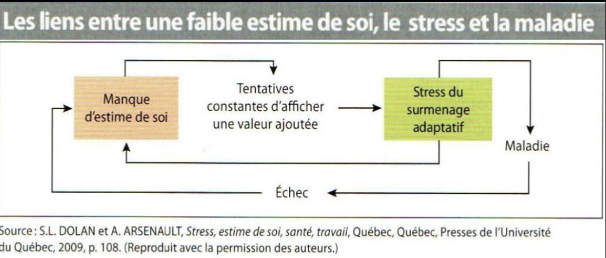

Théories de la motivation au travail
Table des matières
L'essentiel : Comprendre la motivation, c'est comprendre ce qui fait qu'un travailleur s'engage dans son travail au-delà du strict minimum. Plusieurs théories complémentaires : Maslow (besoins), Herzberg (facteurs d'hygiène vs motivateurs), Vroom (attentes), Deci et Ryan (autodétermination). Toutes convergent : la motivation durable repose sur des besoins psychologiques (autonomie, compétence, reconnaissance), pas seulement sur le salaire.
Pourquoi en parler
La motivation au travail est un facteur de protection contre les RPS. Un travailleur motivé tolère mieux les contraintes, s'engage davantage, communique plus, et présente moins d'absentéisme. À l'inverse, un travailleur démotivé glisse plus facilement vers le désengagement, l'iso-strain, l'épuisement.
Comprendre les leviers de motivation permet d'intervenir avant que la démotivation devienne un problème de SST psychosociale.
Théories principales
Maslow (1943) : pyramide des besoins
Cinq niveaux hiérarchisés de besoins, du plus fondamental au plus élevé : physiologiques, sécurité, appartenance, estime, accomplissement de soi. Selon Maslow, les besoins inférieurs doivent être satisfaits avant que les supérieurs deviennent motivants.

Pyramide des besoins de Maslow. Source : SST1010 (UQAM), séance 13. Usage personnel.
Apport : la motivation est multidimensionnelle. Le salaire (sécurité) ne suffit pas si l'appartenance et l'estime ne sont pas comblées.
Limites : la hiérarchie n'est pas aussi rigide qu'avancée. Les besoins se chevauchent.
Évolution moderne (Kaufman, 2020) : Scott Barry Kaufman propose une réinterprétation contemporaine de Maslow sous forme de voilier plutôt que de pyramide. La sécurité (Safety, Connection, Self-esteem) constitue la coque ; la croissance (Exploration, Love, Purpose) constitue la voile ; la transcendance est l'horizon vers lequel on navigue.

Hiérarchie des besoins de Kaufman (2020), réinterprétation moderne de Maslow. Source : SST1010 (UQAM), séance 9. Usage personnel.
Herzberg (1959) : facteurs d'hygiène et motivateurs
Distinction entre deux catégories de facteurs
| Type | Exemples | Effet |
|---|---|---|
| Facteurs d'hygiène | Salaire, conditions, sécurité d'emploi, politique d'entreprise | Leur absence démotive, leur présence ne motive pas en soi |
| Facteurs motivateurs | Reconnaissance, responsabilité, contenu du travail, perspectives | Leur présence motive activement |
Apport : payer plus ne suffit pas. Pour motiver, il faut agir sur les facteurs motivateurs.

Schéma de Herzberg : facteurs intrinsèques (auto-motivation) vs extrinsèques (hygiène de vie). Source : SST1010 (UQAM), séance 9. Usage personnel.
Vroom (1964) : théorie des attentes
La motivation = Expectation × Instrumentalité × Valence. Un travailleur est motivé quand
- Il croit qu'il peut accomplir la tâche (expectation)
- Il croit que l'effort sera récompensé (instrumentalité)
- La récompense a de la valeur pour lui (valence)
Apport : la motivation est cognitive. Elle dépend des perceptions du travailleur sur le lien effort-récompense.
Deci et Ryan (1985-2017) : autodétermination
Trois besoins psychologiques fondamentaux
| Besoin | Définition |
|---|---|
| Autonomie | Sentir qu'on est à l'origine de ses actions |
| Compétence | Sentir qu'on est efficace dans ce qu'on fait |
| Appartenance | Sentir qu'on est connecté aux autres |
Distinction entre motivation intrinsèque (faire pour le plaisir et le sens) et extrinsèque (faire pour les récompenses externes). La motivation intrinsèque est plus durable et associée à un meilleur bien-être.
Apport : c'est la théorie la plus utilisée en recherche moderne sur la motivation au travail.
Convergences pratiques
Toutes les théories convergent sur quelques principes
| Principe | Implication pratique |
|---|---|
| Le salaire est nécessaire mais insuffisant | Investir aussi dans la reconnaissance, le sens, l'autonomie |
| L'autonomie compte | Donner du contrôle sur les méthodes, la planification |
| La compétence se cultive | Permettre d'utiliser et de développer les compétences |
| L'appartenance est essentielle | Soigner le climat d'équipe, la qualité des relations |
| Les perspectives motivent | Mobilité interne, formation, évolution de carrière |
| Le sens du travail compte | Lien entre les tâches et la finalité globale |
Application en mines
Leviers de motivation efficaces en mine
| Levier | Action concrète |
|---|---|
| Autonomie | Participation aux décisions de planification du chantier |
| Compétence | Programme de progression (aide-foreur → foreur, par exemple) |
| Appartenance | Cohésion d'équipe en camp, ratio cadres/équipe suffisant |
| Reconnaissance | Voir Les quatre formes de reconnaissance (Brun et Dugas) |
| Sens | Lier les opérations à un produit ou impact concret |
| Perspectives | Plans de carrière, formation continue |
Erreur classique : croire que le salaire élevé en mine suffit à motiver. Les travailleurs miniers ont souvent les mêmes besoins psychologiques que les autres travailleurs. Le salaire les amène, l'autonomie et la reconnaissance les retiennent.
Documents et outils
| Document |
Pages qui pointent ici (10)
- 🔤 Index alphabétique SST psychosociale
- 🖼️ Index des images du cours SST psychosociale
- Faible latitude décisionnelle SST psychosociale
- Modèles et Théories SST psychosociale
- Modèles et Théories SST psychosociale
- Motivation intrinsèque vs extrinsèque SST psychosociale
- Qualité de vie au travail (QVT) SST psychosociale
- Satisfaction au travail, définition et facteurs SST psychosociale
- Satisfaction et performance SST psychosociale
- Sens du travail et engagement SST psychosociale